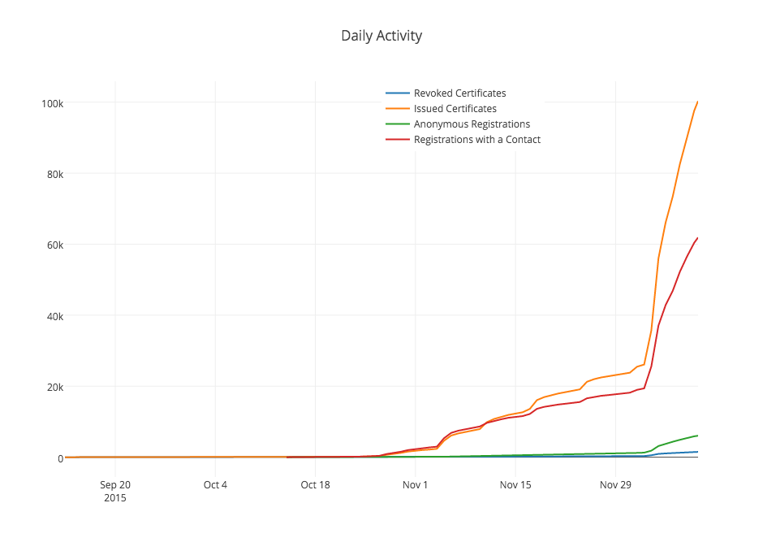

我們正試圖解決什麼問題？
- 網際網路上HTTPS連線不夠的問題
- 這個比例應該是100%
網際網路的安全是重要的...
- 保密性: 防止網路間諜監控
- 私密性: 防止追蹤cookie的攻擊
- 完整性: 防止廣告的入侵
- 真實性: 確保你與真實的網站互動而不是殭屍(DDoS)網路
但是，取得憑證是困難的
- 不同的供應商有不同的人工流程
- 首先，你必須取得網路憑證...
- 然後，你要搞懂如何安裝它
- 為什麼我們不能讓這一切手續自動化呢？
一個新的網路憑證機構
一個自動化的CA
- 發行這張網路憑證的大部份時間，只會花費在驗證和確認網域擁有者的身份
- Let's Encrypt 使用標準的協定,用自動化的方式驗證網域擁有者身份
憑證管理自動化環境
Automated Certificate Management Environment (ACME)
- 假設有人要求一個網路憑證，例如example.com。你如何知道請求者擁有example.com?
網域名確認
給一個網域擁有者才能完成的試驗，比如：
- 提供acme-challenge.example.com的DNS紀錄
- 在http://example.com/.well-known/acme-challenge提供特定檔案
- 在example.com上，設定TLS伺服器
自動化的驗證
- 整個過程在ACME 說明書中被解釋
- 使用者如何要求授權
- 使用者如何完成試驗
- 使用者如何要求憑證
- 有一個標準的協議也代表著使用者可以自行建立工具
- ACME的願景是將上述的過程導入網站伺服器，使其自動化設定HTTPS
一個透明化的CA
一個公開的 CA
Let's Encrypt 使用開放源碼軟體
歡迎提交程式碼!
一個合作化的CA
贊助者來自各行各業

平台整合
未來...
250,000 憑證和數量
這只是剛剛開始...
- 對於現存的CA來說，Let's Encrypt能被當成次要的機構被信任。
- Let's Encrypt能被瀏覽器信任
- 您可以在我們展示的網站上，看到真實的憑證
- 大致上會於2015年12月3號問世！